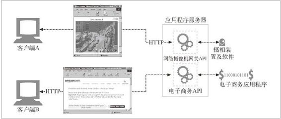
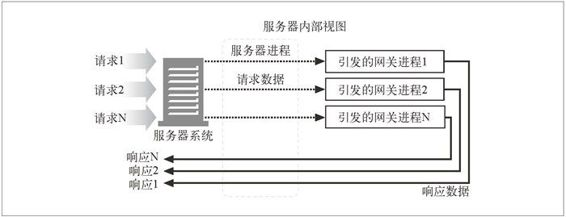

8.3 资源网关
到目前为止，我们一直在讨论通过网络连接客户端和服务器的网关。但最常见的网关，应用程序服务器，会将目标服务器与网关结合在一个服务器中实现。应用程序服务器是服务器端网关，与客户端通过 HTTP 进行通信，并与服务器端的应用程序相连（参见图 8-8）。

图 8-8 应用程序服务器可以将 HTTP 客户端连接任意后台应用程序
在 图 8-8 中，两个客户端是通过 HTTP 连接到应用程序服务器的。但应用程序服务器并没有回送文件，而是将请求通过一个网关应用编程接口（Application Programming Interface，API）发送给运行在服务器上的应用程序。
收到客户端 A 的请求，根据 URI 将其通过 API 发送给一个数码摄相机应用程序。将得到的图片绑定到一条 HTTP 响应报文中，再回送给客户端，在客户端的浏览器中显示。
客户端 B 的 URI 请求的是一个电子商务应用程序。客户端 B 的请求是通过服务器网关 API 发送给电子商务软件的，结果会被回送给浏览器。电子商务软件与客户端进行交互，引导用户通过一系列 HTML 页面来完成购物。
第一个流行的应用程序网关 API 就是通用网关接口（Common Gateway Interface， CGI）。CGI 是一个标准接口集，Web服务器可以用它来装载程序以响应对特定 URL 的 HTTP 请求，并收集程序的输出数据，将其放在 HTTP 响应中回送。在过去的几年中，商业 Web 服务器提供了一些更复杂的接口，以便将 Web 服务器连接到应用程序上去。
早期的 Web 服务器是相当简单的，在网关接口的实现过程中采用的简单方式一直持续到了今天。
请求需要使用网关的资源时，服务器会请辅助应用程序来处理请求。服务器会将辅助应用程序所需的数据传送给它。通常就是整条请求，或者用户想在数据库上运行的请求（来自 URL 的请求字符串，参见第 2 章）之类的东西。
然后，它会向服务器返回一条响应或响应数据，服务器则会将其转发给客户端。服务器和网关是相互独立的应用程序，因此，它们的责任是分得很清楚的。图 8-9 显 示了服务器与网关应用程序之间交互的基本运行机制。

图 8-9 服务器网关应用程序机制
这个简单的协议（输入请求，转交，响应）就是最古老，也最常用的服务器扩展接口 CGI 的本质。
8.3.1 CGI
CGI 是第一个，可能仍然是得到最广泛使用的服务器扩展。在 Web 上广泛用于动态 HTML、信用卡处理以及数据库查询等任务。
CGI 应用程序是独立于服务器的，所以，几乎可以用任意语言来实现，包括 Perl、Tcl、C 和各种 shell 语言。CGI 很简单，几乎所有的 HTTP 服务器都支持它。图 8-9显示了 CGI 模型的基本运行机制。
CGI 的处理对用户来说是不可见的。从客户端的角度来看，就像发起一个普通请求一样。它完全不清楚服务器和 CGI 应用程序之间的转接过程。URL 中出现字符 cgi 和可能出现的“?”是客户端发现使用了 CGI 应用程序的唯一线索。
看来 CGI 是很棒的，对吧？嗯，好吧，既是也不是。它在服务器和众多的资源类型之间提供了一种简单的、函数形式的粘合方式，用来处理各种需要的转换。这个接口还能很好地保护服务器，防止一些糟糕的扩展对它造成的破坏（如果这些扩展直接与服务器相连，造成的错误可能会引发服务器崩溃）。
但是，这种分离会造成性能的耗费。为每条 CGI 请求引发一个新进程的开销是很高的，会限制那些使用 CGI 的服务器的性能，并且会加重服务端机器资源的负担。为了解决这个问题，人们开发了一种新型 CGI——并将其恰当地称为快速 CGI。这个接口模拟了 CGI，但它是作为持久守护进程运行的，消除了为每个请求建立或拆除新进程所带来的性能损耗。
8.3.2 服务器扩展API
CGI 协议为外部翻译器与现有的 HTTP 服务器提供了一种简洁的接口方式，但如果想要改变服务器自身的行为，或者只是想尽可能地提升能从服务器上获得的性能呢？服务器开发者为这两种需求提供了几种服务器扩展 API，为 Web 开发者提供了强大的接口，以便他们将自己的模块与 HTTP 服务器直接相连。扩展 API 允许程序员将自己的代码嫁接到服务器上，或者用自己的代码将服务器的一个组件完整地替换出来。
大多数流行的服务器都会为开发者提供一个或多个扩展 API。这些扩展通常都会绑定在服务器自身的结构上，所以，大多数都是某种服务器类型特有的。微软、网景、Apache 和其他服务器都提供了一些 API 接口，允许开发者通过这些接口改变服务器的行为，或者为不同的资源提供一些定制的接口。这些定制接口为开发者提供了强大的接口方式。
微软的 FPSE（FrontPage 服务器端扩展）就是服务器扩展的一个实例，它为使用 FrontPage 的作者进行 Web 发布提供支持。FPSE 能够对 FrontPage 客户端发送的 RPC（remote procedure call，远程过程调用）命令进行解释。这些命令会在 HTTP 中（具体来说，就是在 HTTP POST 方法上）捎回。细节请参见 19.1 节。